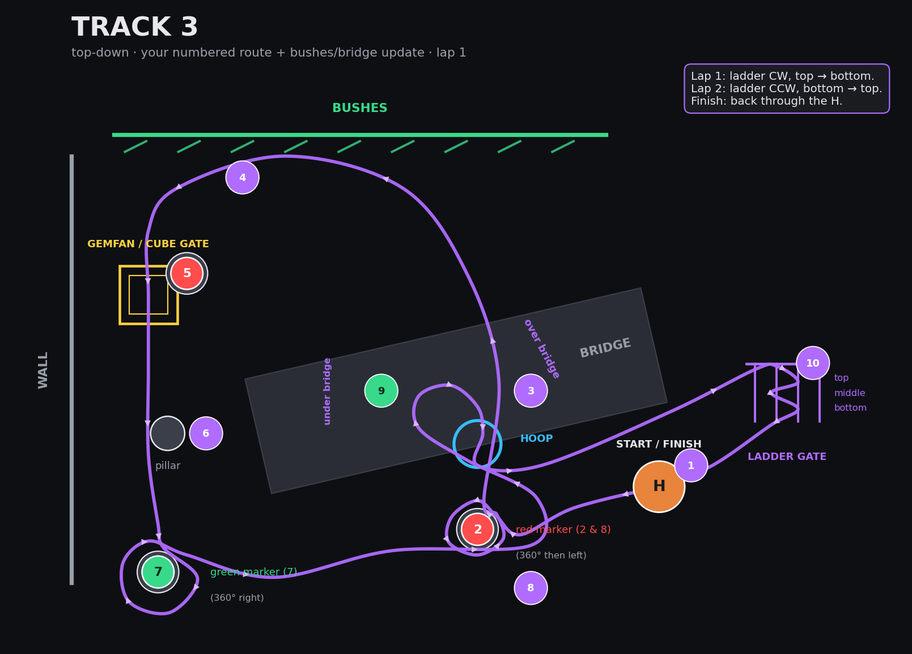
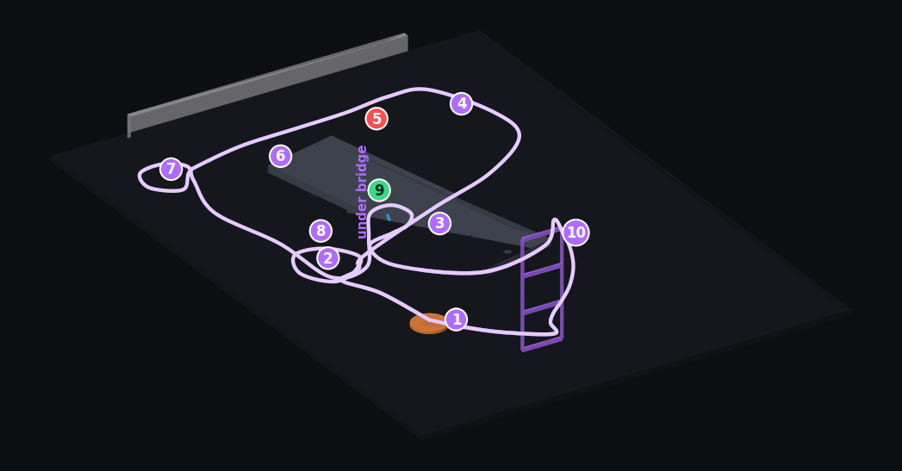
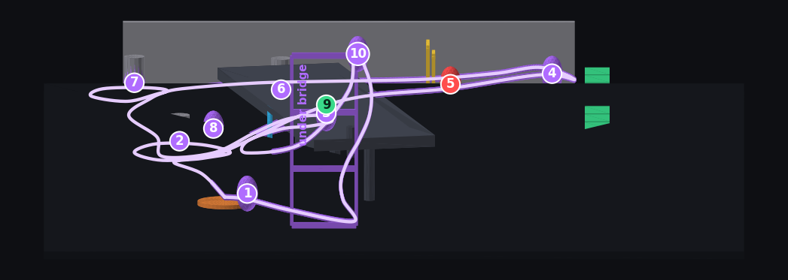
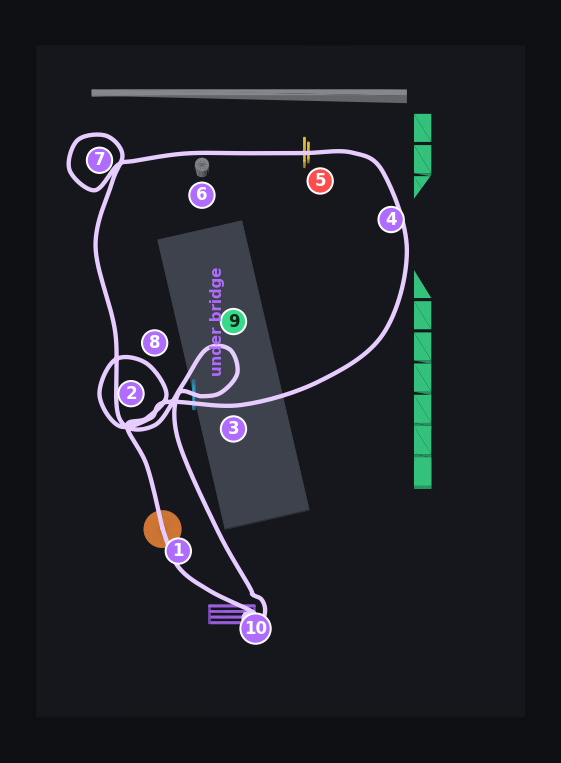

A night FPV circuit the local racers have dubbed “Eagle’s Nest” — a futuristic, dystopian racetrack coiled deep in the concrete aerie, where broken neon and raw structure become the line. It demands the very instincts that crown the eagle king of the sky: the vision to read a gap no one else can see, the precision to fold into a full-throttle dive and thread a gate dead-center, and the fearless nerve to hold power through the dark where lesser pilots peel off. Talons out — only the sharpest hold the top of this nest.
Below: the uploaded run, the top-down plan, a 3D model with the flight path at altitude, a chase-cam fly-through, and the full lap-1 route.
Top-down, north up. Purple ribbon is the racing line for lap 1.

The uploaded run on YouTube.
Same course in 3D — the flight path climbs to fly over the bridge, drops through the hoop at the bridge's bottom edge, and weaves the ladder gate top-to-bottom. Height is exaggerated to make the altitude changes readable.



track3.glb — double-click to open in macOS Quick Look
(drag to orbit, scroll to zoom), or drop into Blender / Fusion / Unreal.
Also written: track3.obj (+ materials), track3-plan.png.
All on your Desktop in track3-map.
Chase-cam along the racing line — launch off the H, both 360s, up and over the bridge, down through the hoop, and the ladder gate to the finish. Step callouts up top.